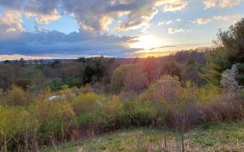

Red Root Floaters
I'm a junior at Cornell Unviersity majoring in Information Science with concentrations in UX/UI Design & Behavioral Science graduating in 2023.
I intend to minor in game design and am interested in the design side of game development.
Ludwigia Natens
I grew up and lived in the Las Vegas valley for 19 years before leaving home to attend Cornell University. I am a first generation student and have been surrounded by diverse experiences my entire life.
In Las Vegas, I worked as a tutor for over 2 years and am passionate about education and helping others learn. I'm excited to apply my experiences as a student, designer, and altruist to opportunities in product design, user research, and UX/UI design.
 Source: Kenny Tran
Source: Kenny Tran
Stargrass
Apart from studying, I enjoy staying active, drawing, and hiking in my free time. I'm a huge volleyball fan and love playing video games/eSports as well.
Through these interests, I became involved in eSports @ Cornell and participate in intramural volleyball with friends from time to time. I act as a coordinator for League of Legends and enjoy helping students pursue competitive tournaments.